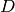
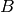
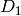
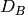
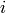
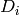

Resampling Learners¶
Resampling strategies concern the process of sampling new data sets from your data set  under examination. One wants to generate various training and test sets, which the learning method can be fitted and validated on. Here it is assumed that every resampling strategy consists of a couple of iterations, where for each one there are indices into , defining the respective training and test sets. These iterations are implemented by storing the index set in a so called ResampleInstance object. The reasons for having the user create this data explicitly and not just set an option in a R function to choose the resampling method are:
It is easier to create paired experiments, where you train and test different methods on exactly the same sets, especially when you want to add another method to a comparison experiment you already did.
It is easy to add other resampling methods later on. You can simply use S4 inheritance, derive from the ResampleInstance class, but you do not have to touch any methods that use the resampling strategy.

Included strategies¶
The packages come with a couple of predefined strategies
Subsampling¶
In each iteration i the data set D is randomly partitioned into a training and a test set according to a given percentage (maybe 2/3 training, 1/3 test set). If there is just one iteration, the strategy is commonly called <term>holdout</term> or <term>test sample estimation</term>.
> rin <- makeResampleDesc("subsample", iters = 10, split = 2/3)
> rin <- makeResampleDesc("subsample", iters = 1, split = 2/3)
k-fold cross-validation¶
The data set is partitioned in k subparts of (nearly) equal size. In the i.th step of the k iterations, the i.th subpart is used as a test set, while the remaining parts form the training set.</p>
> rin <- makeResampleDesc("CV", iters = 10)
Bootstrapping¶
 new data sets  to  are drawn from with replacement, each of the same size as D. In the -th iteration  forms the training set, while the remaining elements not occuring in the training set form the test set.
> rin <- makeResampleDesc("bs", iters = 10)
<p><img src=”pics/resampling.[desc, instance].png” width=”40%” border=”1” alt=”“></p>
<p><img src=”pics/Nested_Resampling.png” width=”60%” border=”1” alt=”“></p>
Further details¶
For every resampling strategy there is a description class inheriting from ResampleDesc (which completely characterizes the necessary parameters) and a class inheriting from ResampleInstance. This latter class takes the description object and takes care of the random drawing of indices. While this seems overly complicated, it is necessary as sometimes one only wants to describe the drawing process, while in other instances one wants to create the concrete index sets. Also, there are convenience methods, to make the construction process as easy as possible. Here is an example for cross-validation:
> desc <- new("cv.desc", iters = 10)
> rin <- new("cv.instance", desc = desc, size = nrow(iris))
> rin <- makeResampleInstance("CV", iters = 10, size = nrow(iris))
Asking the ResampleDesc or ResampleInstance objects for further information is easy, just inspect their slots: operator:
> desc@iters
> rin@iters
> rin["train.inds", 3]
> rin["test.inds", 3]
> rin["train.inds", c(1, 3)]
> rin["test.inds", c(1, 3)]
Please refer to the help pages of the specific classes for a complete list of getters.
The resample function evaluates the performance of your learner using a certain resampling strategy for a given machine learning task.
For the example code, we use the standard iris data set and compare with cross-validation a Decision Tree and the Linear Discriminant Analysis:
> ct <- makeClassifTask(data = iris, target = "Species")
> rin <- makeResampleDesc("CV", iters = 3)
> rin <- makeResampleInstance(rin, task = ct)
> f1 <- resample("classif.rpart", ct, rin)
> wl <- makeLearner("classif.rpart", minsplit = 10, cp = 0.03)
> f1 <- resample(wl, ct, rin, list(mmce, acc))
> f2 <- resample("classif.lda", ct, rin, list(mmce, acc))
> f1
$measures.train
iter mmce acc
1 1 NA NA
2 2 NA NA
3 3 NA NA
$measures.test
iter mmce acc
1 1 0.04 0.96
2 2 0.10 0.90
3 3 0.04 0.96
$aggr
mmce.test.mean mmce.test.sd acc.test.mean acc.test.sd
0.06000000 0.03464102 0.94000000 0.03464102
$pred
Resampled Prediction for: cross-validation with 3 iterations.
Predict: test
$models
NULL
$extract
$extract[[1]]
NULL
$extract[[2]]
NULL
$extract[[3]]
NULL
> f2
$measures.train
iter mmce acc
1 1 NA NA
2 2 NA NA
3 3 NA NA
$measures.test
iter mmce acc
1 1 0.02 0.98
2 2 0.04 0.96
3 3 0.02 0.98
$aggr
mmce.test.mean mmce.test.sd acc.test.mean acc.test.sd
0.02666667 0.01154701 0.97333333 0.01154701
$pred
Resampled Prediction for: cross-validation with 3 iterations.
Predict: test
$models
NULL
$extract
$extract[[1]]
NULL
$extract[[2]]
NULL
$extract[[3]]
NULL